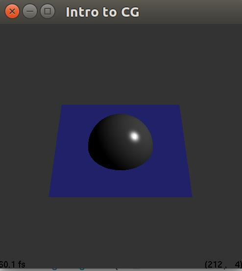
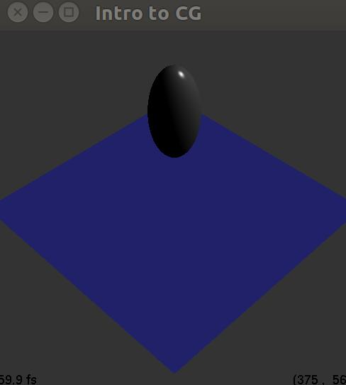
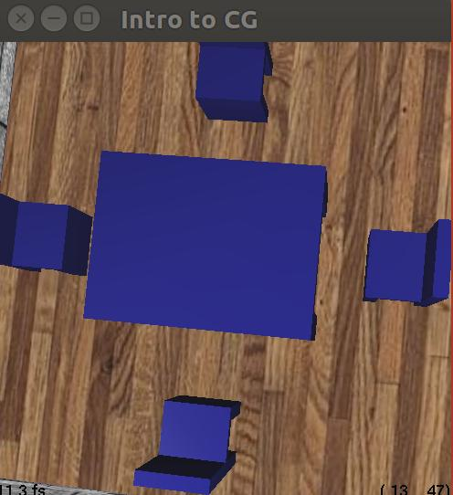
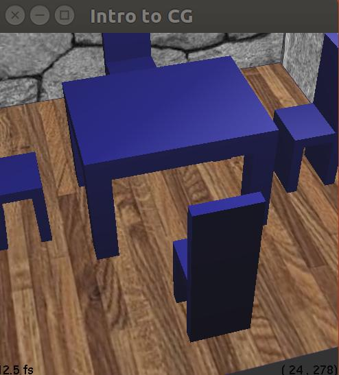
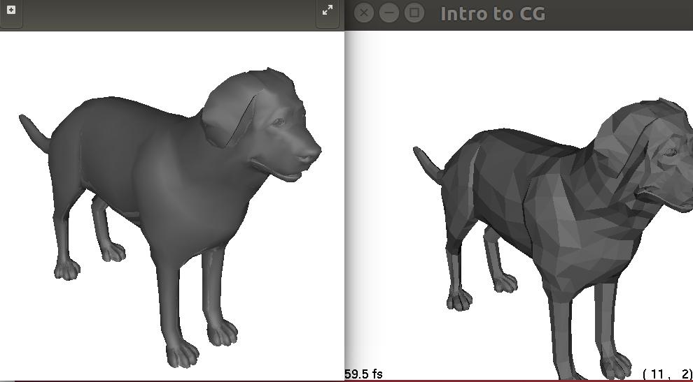

Name: Peiyi Zheng
JHED ID: pzheng4
Compiler: gcc 5.4.0
Environment: Ubuntu 16.04
Number of late days used: 2
|  |
|  |
|  |  |
rotation result 1 |
rotation result 2 |
|  |
Left: ray tracing; Right: OpenGL rendering |
1. All features above anti-aliasing using the accumulation buffer
2. A room scene with the following features(room.ray):
3. Acceleration of RayShape::drawOpenGL of the different subclasses
4. Modify the OpenGL renderer to allow the user to ray-trace the scene from the same perspective as the RayCamera.